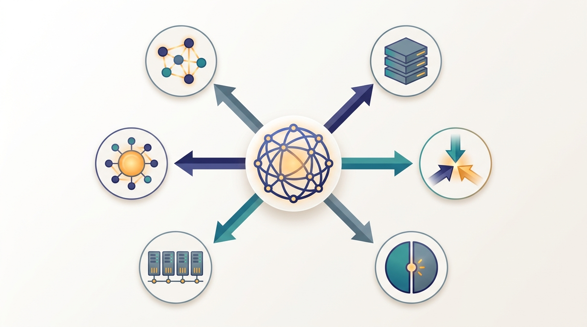

"They asked me to point at the one machine that runs the model. I pointed at the data center and said: yes."
A Coordinator With Too Many Children

A real AI system is rarely distributed along a single dimension; it is spread along several independent axes at once, and naming those axes turns a tangle of frameworks and acronyms into a clean map of the whole field. The previous section established the thesis (distribute the essential work) and proved that one central form of it, the data-parallel gradient, is exact rather than approximate. This section makes the thesis usable. It walks the six axes of distribution one at a time, gives each a crisp definition, anchors each to a named system you can look up today, and points to the part of the book that develops it. The payoff is the realization that the interesting systems, the ones worth a chapter of their own, live exactly where several axes cross.
In Section 1.1 we collected the six axes into Table 1.1.1 and promised a tour. This section delivers it. The organizing claim is simple: every distributed AI system answers some subset of six questions, and each question is owned by one part of this book. Where do the data live and how are they processed? How is the training computation split across workers? How is a single model split across devices? How are predictions served from a fleet? How is the cluster underneath scheduled and kept alive? And how do many semi-autonomous agents reason and coordinate? Hold those six questions in mind and any system you meet, from a nightly recommender retrain to a planet-scale language-model service, decomposes into a position on each axis.
The axes are independent in the sense that a system can sit anywhere on each one without constraining the others: a workload can be heavy on data distribution and trivial on model distribution, or the reverse. They are not independent in their consequences, because every axis you activate adds communication and a new way to fail, the two taxes named in Section 1.1. Figure 1.2.1 lays the six axes out as spokes of a single wheel, with the hub reminding us that they share one cluster and one network; the rest of the section walks the spokes in turn.
1. Distribute Data Beginner
The first axis answers the question: how do we store and process datasets that exceed the memory, and often the disk, of any single machine? To distribute data is to partition a dataset into shards spread across many nodes, then to express computation as operations that run locally on each shard and exchange only what must cross machine boundaries. The defining move is to bring the computation to the data rather than pulling terabytes to one place, because moving petabytes across a network is the slowest thing a cluster can do.
The canonical named system here is Apache Spark, which holds a dataset as a partitioned collection scattered across a cluster and runs transformations on each partition in parallel, shuffling records between machines only at well-defined boundaries. Its ancestor, Google's MapReduce, established the same pattern for web-scale text. Before any model is trained, the corpus must be cleaned, deduplicated, tokenized, and sharded, and that preprocessing is itself a large distributed-data job. This axis is the entire subject of Part II, beginning with the MapReduce model in Chapter 6 and the storage and loading layer that feeds training in Chapter 8.
An AI system is not "a data system" or "a training system"; it occupies a position on each of the six axes simultaneously. Asking "is this distributed?" is the wrong question. The useful questions are six: along which axes is this distributed, how far along each, and which of those positions is forced by a real ceiling versus chosen out of habit? A system that scores high on one axis and zero on the rest is simple to reason about; the design difficulty grows with the number of axes that are simultaneously active, because their communication costs and failure modes interact.
2. Distribute Training Beginner
The second axis answers: how do we run the training computation across many workers so that a model converges faster, or at all? To distribute training is to replicate the learning loop across workers that each process a portion of the data, then to combine their contributions into one consistent update. This is exactly the data-parallel gradient identity proved in Section 1.1: $K$ workers compute partial gradients on disjoint shards and an all-reduce sums them into the same vector a single machine would have produced. The model fits on each worker; what is split is the work of estimating the gradient.
The named system that defines this axis for deep learning is PyTorch DistributedDataParallel (DDP), which wraps a model so that every backward pass triggers a gradient all-reduce across the worker group automatically. The same axis covers the parameter-server architectures that predate it and the synchronous and asynchronous optimization schemes that trade consistency for speed. Part III develops this axis from the optimization theory up, starting with Chapter 10 on distributed optimization, and the data-parallel deep-learning realization arrives in Chapter 15. The collective it leans on, all-reduce, is built from first principles in Chapter 4.
3. Distribute the Model Intermediate
The third axis answers a sharper question: what do we do when the model itself, not just the data, is too large for one device? To distribute the model is to split a single network's parameters, optimizer state, and activations across several devices that together hold one logical model. No device owns the whole network; each owns a slice, and a forward or backward pass becomes a choreographed exchange of activations and gradients between slices. This is qualitatively harder than distributing training, because the split runs through the middle of the computation graph rather than around it.
There are several distinct ways to cut a model, and the book treats them as a family. Tensor parallelism splits individual layers across devices; pipeline parallelism assigns consecutive layers to different devices and streams microbatches through them; sharded data parallelism (ZeRO and PyTorch's FSDP) partitions the parameters and optimizer state so no device holds a full copy, reconstructing each layer just in time with an all-gather. Megatron-LM is the canonical named system for tensor and pipeline splitting of transformer layers. All of these live in Chapter 16, and their sparse cousin, expert parallelism, where a routing layer sends each token to one of many experts living on different machines, follows in Chapter 17.
When a model is split tensor-wise, each device holds a vertical slice of every layer and computes a partial result that is meaningless on its own. The slice has no idea it is a fragment; it dutifully multiplies its piece of the weight matrix and waits for the all-reduce to assemble the real answer from all the other equally confident fragments. The whole illusion of "one model" is maintained by collectives firing on every layer, which is why a network hiccup in the middle of a forward pass can stall an entire trillion-parameter model that, on paper, was running fine.
4. Distribute Inference Beginner
The fourth axis answers: how do we serve predictions to many clients at once, under a latency budget, from more than one machine? To distribute inference is to replicate a trained model across a fleet and route incoming requests among the replicas, and, when a single model is itself too large or too slow, to shard that model across devices within each replica as well. Inference distribution therefore inherits the model-splitting techniques of axis three and adds the concerns of a live service: routing, batching, autoscaling, and tail latency.
The named system that defines the modern version of this axis is vLLM, an LLM serving engine that combines paged key-value caching with continuous batching and tensor-parallel sharding to push many concurrent requests through a large model on a fleet of accelerators. Distributing inference is the subject of Part V, with the general systems treated in Chapter 23 and the language-model-specific machinery, where the key-value cache economics of one node multiply across the whole fleet, in Chapter 24. The single-node efficiency that this axis multiplies is the labeled prerequisite of Chapter 22, and is never the main event.
5. Coordinate the Cluster Intermediate
The fifth axis is different in kind from the first four. It does not distribute a specific AI activity; it is the substrate that makes the other four possible and keeps them alive. To coordinate the cluster is to decide which job runs on which machine, to recover when a machine dies mid-job, to keep workers in agreement about shared state, and to measure whether the whole arrangement is actually efficient. Every other axis assumes a cluster that schedules work, tolerates failure, and lets machines reach agreement; that assumption is itself a deep distributed-systems problem.
The named system here is Kubernetes together with gang schedulers such as Volcano, which place tightly coupled training jobs so that all of a job's workers start together or not at all, avoiding the deadlock of half a job waiting forever for the rest. This axis straddles the book. The conceptual foundations, consistency, consensus, failure models, and the cost models that tell you when coordination overhead dominates, are laid in Part I, including the performance models of Chapter 3. The production machinery, cluster scheduling, resource isolation, and reliability engineering, is the subject of Part VII, beginning with Chapter 33. The two halves bracket the rest of the book because coordination is the floor everything else stands on.
6. Distribute Intelligence Advanced
The sixth axis raises distribution from mechanism to behavior. The first five axes distribute the implementation of one decision-maker; the sixth distributes the decision-making itself across many semi-autonomous agents that each perceive, reason, and act, then coordinate to produce collective behavior no single agent could. The question it answers is: how do many agents, possibly with different goals and only partial views, negotiate, compete, cooperate, and reach agreement? This axis brings in game theory, multi-agent learning, and consensus among peers rather than workers obeying a coordinator.
A vivid named example is a drone swarm, in which dozens of aerial robots maintain formation, allocate search regions, and avoid collisions using only local sensing and short-range communication, with no central pilot. The behavior is an emergent property of local rules, the same principle that powers ant-colony and particle-swarm optimization. Part VI owns this axis, from the foundations of distributed artificial intelligence through multi-agent reinforcement learning to the collective behavior studied in Chapter 31. This is the axis where "distributed" stops meaning "one mind on many machines" and starts meaning "many minds reaching a joint decision."
The clearest recent evidence that the axes compose is that production systems now activate all six in a single loop. DeepSeek-V3 (2024) trains a 671-billion-parameter mixture-of-experts model by stacking data distribution, data-parallel training, tensor and pipeline model splitting, and expert parallelism, then serves it with disaggregated prefill and decode across a fleet, touching axes one through five. On the sixth axis, agentic frameworks in the lineage of AutoGen and the Model Context Protocol (2024 to 2025) coordinate many tool-using LLM agents over shared memory, and over-the-internet training efforts such as Prime Intellect's INTELLECT-1 (2024), built on the DiLoCo local-update scheme from Section 1.1, distribute training across machines that are not even in the same building. The research direction is explicitly toward co-designing several axes together rather than optimizing each in isolation, which is why Chapter 19 can only be written after the chapters that own each axis alone.
7. How the Axes Stack Inside One System Intermediate
The axes earn their keep when we watch them stack inside a system the reader already knows: the training and serving of a large language model. A single such pipeline does not pick one axis; it activates four or five at once, and the device count it consumes is the product of the per-axis factors. Table 1.2.1 traces one representative configuration across the axes, and the short program below makes the multiplication concrete by tallying the GPUs each axis commits.
| Axis | Active in LLM pipeline? | Concrete mechanism |
|---|---|---|
| Distribute data | Yes (training) | Corpus sharded and streamed by the data loader |
| Distribute training | Yes | Data-parallel replicas synchronized by all-reduce |
| Distribute the model | Yes | Tensor and pipeline splitting across devices |
| Distribute inference | Yes (serving) | Replicated, sharded serving engine (vLLM) |
| Coordinate the cluster | Yes | Gang scheduler, checkpointing, fault recovery |
| Distribute intelligence | Only if agentic | Multiple tool-using agents over shared memory |
The first five rows are active for essentially every frontier language model; the sixth switches on only when the model is wrapped into a multi-agent application. The code below counts the consequence: when the data-parallel factor and the model-split factor multiply, a single training step occupies hundreds of accelerators, and the serving fleet adds its own product on top.
# A single LLM training+serving job touches several axes at once.
# We tally, for a representative GPT-scale configuration, how many GPUs
# each axis consumes and how they multiply into one global device count.
axes = {
"distribute data (shard the corpus)": {"factor": 1, "note": "1 logical copy, streamed"},
"distribute training (data-parallel)": {"factor": 64, "note": "DP replicas"},
"distribute the model (tensor x pipeline)":{"factor": 8, "note": "8-way model shard"},
}
total = 1
for name, a in axes.items():
total *= a["factor"]
print(f"{name:42s} x{a['factor']:<4d} ({a['note']})")
print("-" * 64)
print(f"{'GPUs busy on one training step':42s} = {total}")
# Serving the trained model lives on two more axes simultaneously.
serve_replicas, kv_shard = 40, 4
print(f"{'distribute inference (serving replicas)':42s} x{serve_replicas}")
print(f"{' x KV/tensor shard per replica':42s} x{kv_shard}")
print(f"{'GPUs in the serving fleet':42s} = {serve_replicas * kv_shard}")
distribute data (shard the corpus) x1 (1 logical copy, streamed)
distribute training (data-parallel) x64 (DP replicas)
distribute the model (tensor x pipeline) x8 (8-way model shard)
----------------------------------------------------------------
GPUs busy on one training step = 512
distribute inference (serving replicas) x40
x KV/tensor shard per replica x4
GPUs in the serving fleet = 160This multiplication is the aha. The question "how distributed is this system?" has no scalar answer, because the system occupies five axes at once and the cost is their product, not their sum. It also explains the architecture of this book: each axis gets its own part because each is a self-contained discipline, and the chapters that combine them, such as Chapter 19 on foundation-model training, come last because they presuppose the rest.
The six axes are the scaffold the entire book hangs on. Each later part is a deep treatment of one spoke of Figure 1.2.1, and each signature arc in the cross-reference map, the all-reduce of Chapter 4 returning across Parts III, IV, and V, the MapReduce shuffle of Chapter 6 reappearing as the training-step all-reduce, is a movement along or between these axes. When a later chapter introduces a new method, locate it on the wheel first; its axis tells you which collective it relies on and which failure modes it inherits, before you have read a line of its mechanism.
The bookkeeping of Code 1.2.1, deciding how many devices go to data parallelism versus model splitting and wiring up the right collectives for each, is exactly what modern training frameworks turn into a few declarative lines. With Hugging Face Accelerate plus DeepSpeed, the three-axis placement (data, training, model) collapses into one configuration and a one-line wrap, and the library generates the process groups, gradient bucketing, and parameter sharding underneath:
# accelerate config writes a yaml; here is the essence of a 3D-parallel setup.
from accelerate import Accelerator
accelerator = Accelerator() # reads world size, ranks, device mesh
model, optimizer, dataloader = accelerator.prepare( # one call places the job on
model, optimizer, dataloader) # the data, training, and model axes
# training loop is now identical to single-GPU code:
for batch in dataloader:
loss = model(batch).loss
accelerator.backward(loss) # fires the right collectives per axis
optimizer.step(); optimizer.zero_grad()
prepare call. Accelerate and DeepSpeed handle the device mesh, gradient bucketing, and parameter partitioning that Chapter 16 unpacks by hand.Who: A staff engineer asked to evaluate a vendor's "fully distributed" recommendation platform before a purchase.
Situation: The sales deck claimed the platform was distributed end to end, but the team needed to know where the real engineering, and the real risk, actually sat.
Problem: "Distributed" was being used as a single marketing adjective for a system that, in practice, occupied very different positions on each axis.
Dilemma: Trust the blanket claim and budget for a uniformly hard integration, or find a way to decompose the claim into checkable pieces without a month of reverse engineering.
Decision: The engineer scored the platform on each of the six axes separately, using Figure 1.2.1 as a checklist, and asked the vendor one pointed question per axis.
How: Data distribution scored high (sharded feature store, real shuffle); training distribution scored medium (data-parallel only, no model splitting needed for the small models); model distribution scored zero (every model fit on one GPU); inference distribution scored high (replicated fleet with autoscaling); cluster coordination scored medium (managed Kubernetes, weak checkpointing); intelligence distribution was absent. The "fully distributed" claim was true on three axes and irrelevant on the rest.
Result: The team budgeted integration effort where the axes were actually active, caught the weak checkpointing story on the coordination axis before signing, and negotiated it into the contract.
Lesson: "Is it distributed?" is unanswerable; "where on the six axes does it sit, and how far?" is a checklist. The wheel in Figure 1.2.1 is a diagnostic, not just a table of contents.
8. What's Next Beginner
We now have the map: six axes of distribution, a named system anchoring each, a part of the book developing each, and the worked realization that a single large-language-model pipeline lights up five of them at once, with a device cost that is their product rather than their sum. The interesting systems live where axes cross, and the rest of this book is the study of those crossings. Before we descend into any one axis, one foundational distinction remains, the one that decides, for each axis, whether to add machines at all or to make one machine bigger. That is the scale-out versus scale-up question, and it is the subject of Section 1.3.
For each system, mark which of the six axes from Figure 1.2.1 are active and, for the active ones, give one sentence on what is being split: (a) a real-time fraud scorer running a tiny gradient-boosted model behind a load balancer; (b) a nightly batch job that deduplicates a 30-terabyte crawl and retrains a 70-billion-parameter language model on it; (c) a warehouse of autonomous mobile robots that route themselves around each other to fulfill orders. Identify which system, if any, touches the distribute-intelligence axis and explain why the other two do not.
Extend Code 1.2.1 so the training-step device count is computed from four named factors instead of two: a data-parallel factor, a tensor-parallel factor, a pipeline-parallel factor, and an expert-parallel factor. Print the product and the per-axis breakdown. Then add a constraint check that the product does not exceed a given cluster size (say 1024 GPUs) and have the program report by how much each candidate configuration is over or under budget. Use it to find two distinct factor combinations that exactly fill a 512-GPU cluster, and comment on why a system designer might prefer one over the other even though both use the same number of devices.
Pick any single axis from this section other than coordinate-the-cluster. In one paragraph each, argue what specific communication that axis adds (which information must cross machine boundaries, and how often) and what new failure mode it introduces (what breaks, and what the system must do to recover). Then explain why the coordinate-the-cluster axis is the one that must absorb both consequences for every other axis, and connect your answer to why Part I and Part VII bracket the book. The cost models you would need to make the communication argument quantitative are developed in Chapter 3.